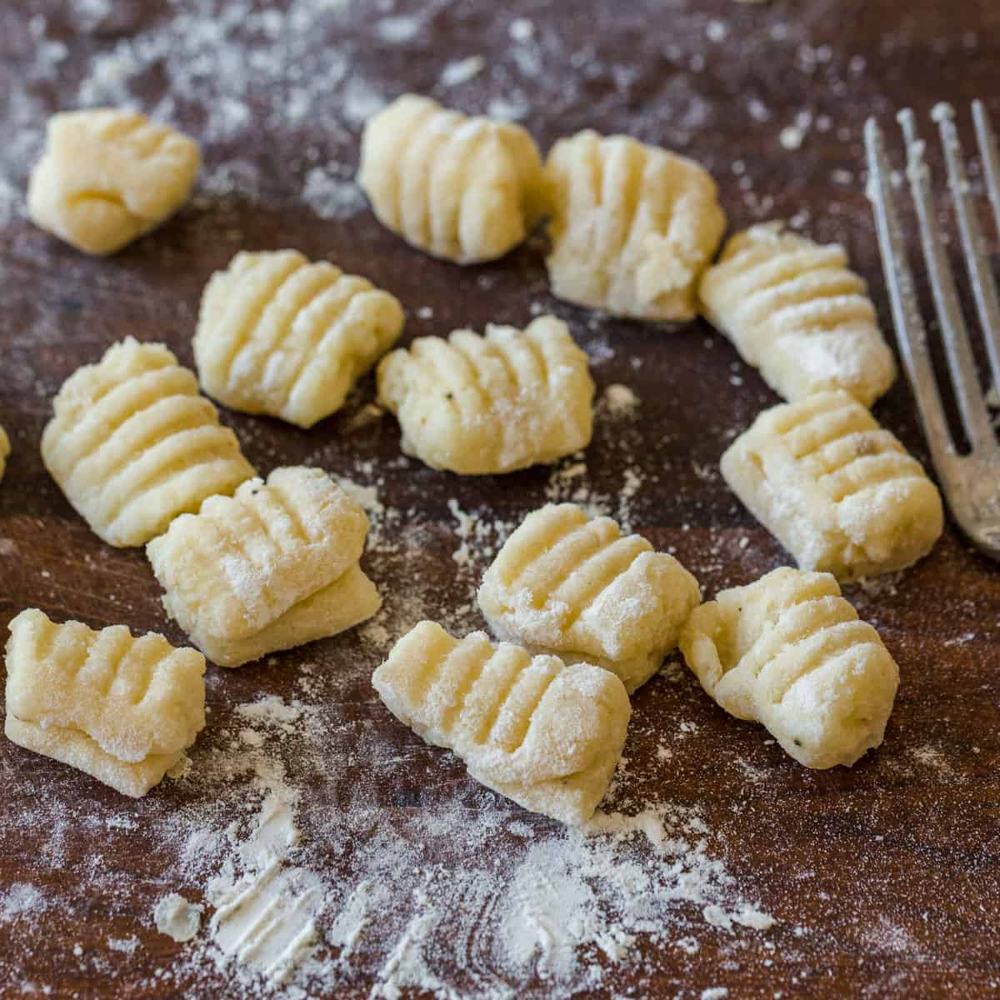

Gnocchi

Gnocchi are small dumplings that are traditionally made with potatoes,
flour and eggs.
Ingredients
- 2 pounds of russet potatoes
- 1 cup of all-purpose flour
- 1 egg
- Salt and pepper, to taste
Steps
-
Begin by boiling the potatoes in a pot of salted water until they are
fork-tender. Drain the potatoes and let them cool for a few minutes.
-
Peel the potatoes and pass them through a potato ricer or mash them with
a fork.
-
Spread the mashed potatoes out on a work surface and make a well in the
center.
- Crack the egg into the well and add a pinch of salt and pepper.
-
Slowly incorporate the flour into the mashed potatoes and egg, working
the mixture with your hands until a soft dough forms.
-
Divide the dough into 4 pieces and roll each piece into a long rope
about 1/2 inch in diameter. Cut the rope into small pieces, about 1 inch
long.
-
To shape the gnocchi, roll each piece of dough against the back of a
fork with your thumb, creating a small indentation on one side and
ridges on the other.
-
Bring a large pot of salted water to a boil. Gently drop the gnocchi
into the boiling water, being careful not to overcrowd the pot.
-
Cook the gnocchi for about 2-3 minutes or until they float to the
surface.
-
Remove the gnocchi from the pot with a slotted spoon and toss with your
desired sauce.
- Garnish with grated Parmesan cheese and chopped fresh parsley.
Note: You can also add some semolina flour or flour with a higher gluten
content to improve the texture of the gnocchi, also you can add some
ingredients to the dough like spinach or beetroot to give them a different
color.
Go back to menu